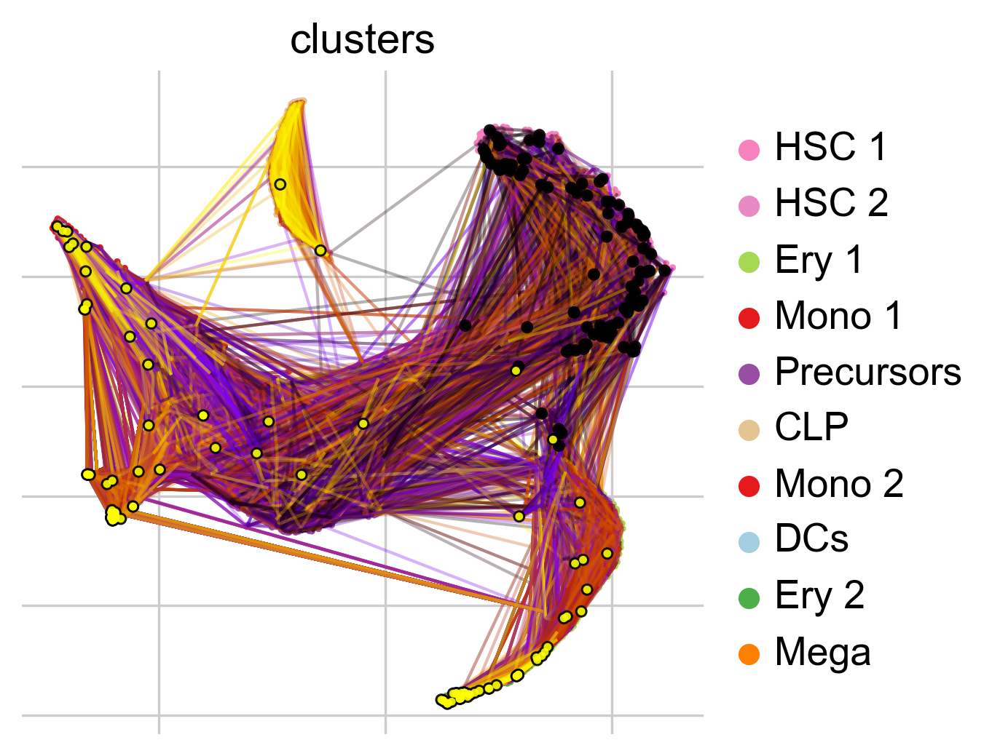
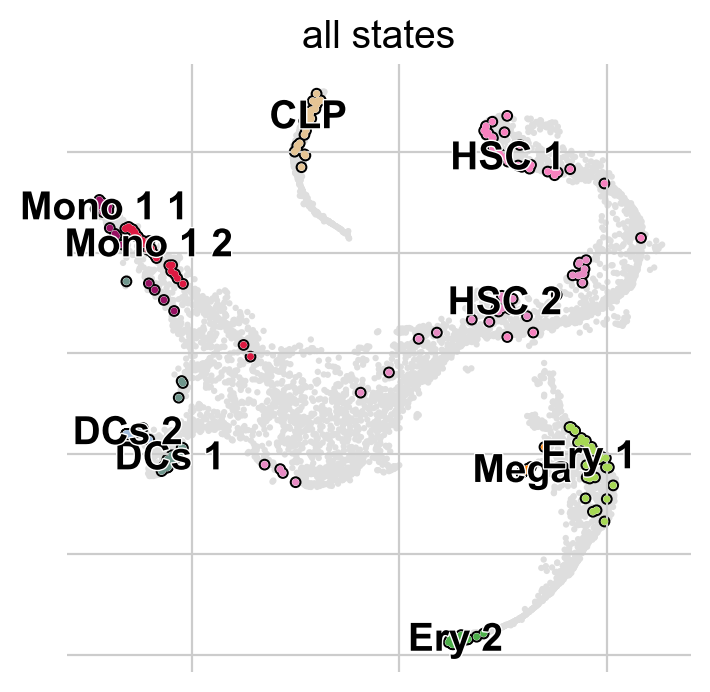
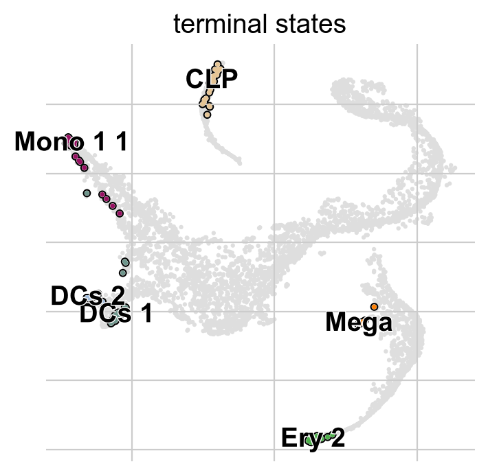
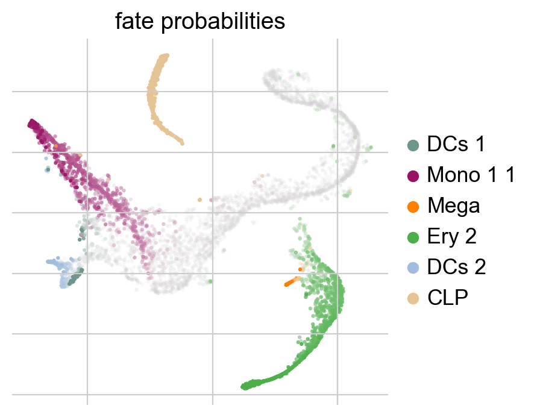
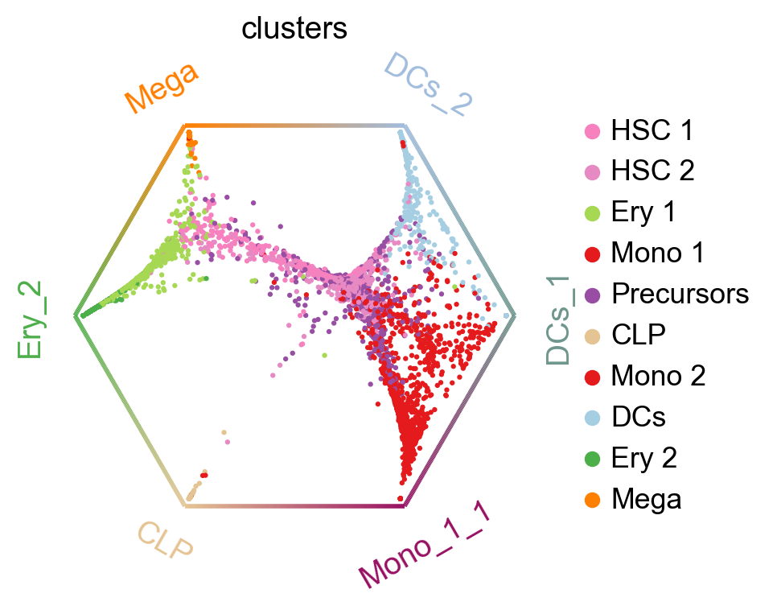
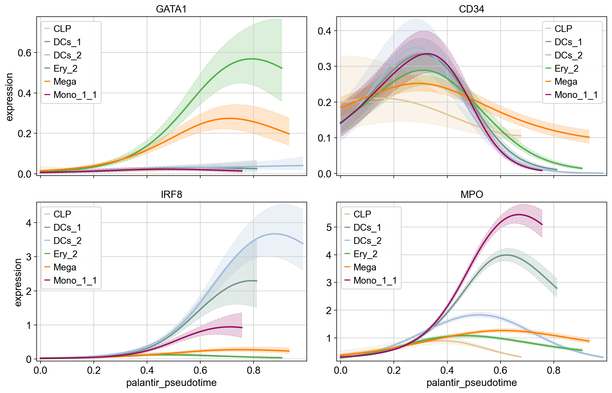
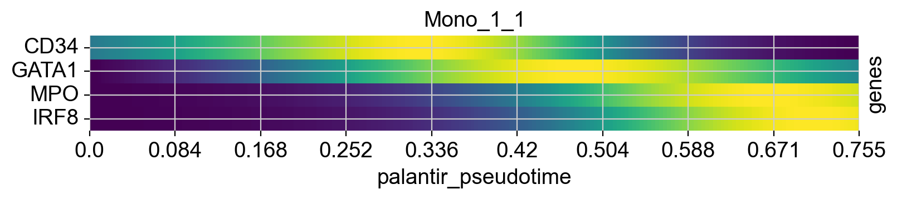
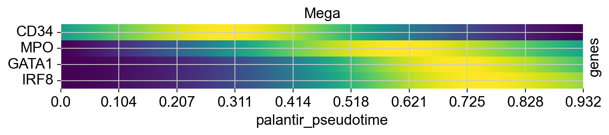
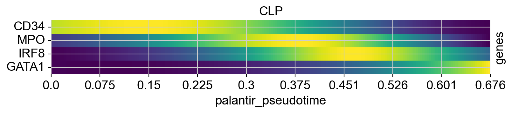

Getting Started with CellRank#
Preliminaries#
Import packages & data#
import cellrank as cr
import scanpy as sc
sc.settings.set_figure_params(frameon=False, dpi=100)
cr.settings.verbosity = 2
import warnings
warnings.simplefilter("ignore", category=UserWarning)
To demonstrate the appproach in this tutorial, we will use a scRNA-seq dataset of human bone marrow, which can be conveniently acessed through cellrank.datasets.bone_marrow from Setty et al. 2019.
adata = cr.datasets.bone_marrow()
adata
100%|██████████| 370M/370M [02:18<00:00, 2.80MB/s]
AnnData object with n_obs × n_vars = 5780 × 27876
obs: 'clusters', 'palantir_pseudotime', 'palantir_diff_potential'
var: 'palantir'
uns: 'clusters_colors', 'palantir_branch_probs_cell_types'
obsm: 'MAGIC_imputed_data', 'X_tsne', 'palantir_branch_probs'
layers: 'spliced', 'unspliced'
Move MAGIC imputed data to ~anndata.AnnData.layers.
adata = adata[:, adata.var["palantir"]].copy()
adata.layers["MAGIC_imputed_data"] = adata.obsm["MAGIC_imputed_data"].copy()
Preprocess the data#
Filter and normalize.
sc.pp.filter_genes(adata, min_cells=5)
sc.pp.normalize_total(adata, target_sum=1e4)
sc.pp.log1p(adata)
sc.pp.highly_variable_genes(adata, n_top_genes=3000)
OMP: Info #276: omp_set_nested routine deprecated, please use omp_set_max_active_levels instead.
Compute PCA and k-nearest neighbor (k-NN) graph.
sc.tl.pca(adata, random_state=0)
sc.pp.neighbors(adata, random_state=0)
Visualize this data, using the t-SNE embedding, cluster labels and Palantir pseudotime provided with the original study Setty et al., 2019.
sc.pl.embedding(adata, basis="tsne", color=["clusters", "palantir_pseudotime"])
{kind=link}
Working with kernels#
Set up a kernel#
To construct a transition matrix, CellRank offers a number of kernel classes in cellrank.kernels. To demonstrate the concept, we’ll use the ``cellrank.kernels.PseudotimeKernel` which biases k-NN graph edges to point into the direction of increasing pseudotime, inspired by Palantir Setty et al., 2019.
For a full list of kernels, check out our API <cellrank.kernels>. To initialize a kernel object, simply run the following:
from cellrank.kernels import PseudotimeKernel
pk = PseudotimeKernel(adata, time_key="palantir_pseudotime")
Note that kernels need an anndata.AnnData object to read data from it - CellRank is part of the Scanpy/AnnData ecosystem. The only exception to this is the cellrank.kernels.PrecomputedKernel which directly accepts a transition matrix, thus making it possible to interface to CellRank from outside the scanpy/AnnData world.
To learn more about our kernel object, we can print it.
pk
PseudotimeKernel[n=5780]
There isn’t very much here yet! Let’s use this kernel to compute a cell-cell cellrank.kernels.PseudotimeKernel.transition_matrix.
pk.compute_transition_matrix()
Computing transition matrix based on pseudotime
Finish (0:00:00)
PseudotimeKernel[n=5780, dnorm=False, scheme='hard', frac_to_keep=0.3]
If we print the kernel again, we can inspect the parameters that were used to compute this transition matrix.
pk
PseudotimeKernel[n=5780, dnorm=False, scheme='hard', frac_to_keep=0.3]
To get a first impression of the cellular dynamics in this dataset, we can simulate random walks on the Markov chain implied by the transition matrix, starting from hematopoietic stem cells (HSCs), and visualize these in the t-SNE embedding.
pk.plot_random_walks(
seed=0,
n_sims=100,
start_ixs={"clusters": "HSC_1"},
basis="tsne",
legend_loc="right",
dpi=150,
)
Simulating `100` random walks of maximum length `1445`
100%|██████████| 100/100 [00:19<00:00, 5.04sim/s]
Finish (0:00:19)
Plotting random walks
{kind=link}

Black and yellow dots indicate random walk start and terminal cells, respectively. Overall, this reflects the known differentiation hierachy in human hematopoiesis.
Combining different kernels#
Any two kernels can be globally combined via a weighted mean. To demonstrate this, let’s set up an additional cellrank.kernels.ConnectivityKernel, based on gene expression similarity.
from cellrank.kernels import ConnectivityKernel
ck = ConnectivityKernel(adata).compute_transition_matrix()
Computing transition matrix based on `adata.obsp['connectivities']`
Finish (0:00:00)
Print the kernel to see some properties
ck
ConnectivityKernel[n=5780, dnorm=True, key='connectivities']
Combine with the cellrank.kernels.PseudotimeKernel PseudotimeKernel from above.
combined_kernel = 0.8 * pk + 0.2 * ck
combined_kernel
(0.8 * PseudotimeKernel[n=5780, dnorm=False, scheme='hard', frac_to_keep=0.3] + 0.2 * ConnectivityKernel[n=5780, dnorm=True, key='connectivities'])
This works for any combination of kernels, and generalizes to more than two kernels. Kernel combinations allow you to use distinct sources of information to describe cellular dynamics.
Writing and reading a kernel#
Sometimes, we might want to write the kernel to disk, to either continue with the analysis later on, or to pass it to someone else. This can be easily done; simply write the kernel to adata, and write adata to file:
pk.write_to_adata()
adata.write("hematopoiesis.h5ad")
To continue with the analysis, we read the anndata.AnnData object from disk, and initialize a new kernel from the AnnData object.
adata = sc.read("hematopoiesis.h5ad")
pk_new = cr.kernels.PseudotimeKernel.from_adata(adata, key="T_fwd")
pk_new
PseudotimeKernel[n=5780, dnorm=False, frac_to_keep=0.3, scheme='hard']
Working with estimators#
Set up an estimator#
Estimators take a kernel object and offer methods to analyze it. The main objective is to decompose the state space into a set of macrostates that represent the slow-time scale dynamics of the process. A subset of these macrostates will be the initial or terminal states of the process, the remaining states will be intermediate transient states. CellRank currently offers two estimator classes in cellrank.estimators:
cellrank.estimators.CFLARE: Clustering and Filtering Left And Right Eigenvectors. Heuristic method based on the spectrum of the transition matrix.cellrank.estimators.GPCCA: Generalized Perron Cluster Cluster Analysis: project the Markov chain onto a small set of macrostates using a Galerkin projection which maximizes the self-transition probability for the macrostates, [].
from cellrank.estimators import GPCCA
g = GPCCA(pk_new)
print(g)
GPCCA[kernel=PseudotimeKernel[n=5780], initial_states=None, terminal_states=None]
Identify initial & terminal states#
Fit the estimator to compute macrostates of cellular dynamics; these may include initial <cellrank.estimators.GPCCA.initial_states>, terminal <cellrank.estimators.GPCCA.terminal_states> and intermediate states.
g.fit(n_states=10, cluster_key="clusters")
g.plot_macrostates(which="all")
WARNING: Unable to import `petsc4py` or `slepc4py`. Using `method='brandts'`
WARNING: For `method='brandts'`, dense matrix is required. Densifying
Computing Schur decomposition
Adding `adata.uns['eigendecomposition_fwd']`
`.schur_vectors`
`.schur_matrix`
`.eigendecomposition`
Finish (0:05:07)
Computing `10` macrostates
WARNING: Color sequence contains non-unique elements
Adding `.macrostates`
`.macrostates_memberships`
`.coarse_T`
`.coarse_initial_distribution
`.coarse_stationary_distribution`
`.schur_vectors`
`.schur_matrix`
`.eigendecomposition`
Finish (0:00:50)
{kind=link}

For each macrostate, the algorithm computes an associated stability value. Let’s use the most stable macrostates as terminal <cellrank.estimators.GPCCA.terminal_states>.
g.predict_terminal_states(method="top_n", n_states=6)
g.plot_macrostates(which="terminal")
Adding `adata.obs['term_states_fwd']`
`adata.obs['term_states_fwd_probs']`
`.terminal_states`
`.terminal_states_probabilities`
`.terminal_states_memberships
Finish`
{kind=link}

This correctly identified all major terminal states <cellrank.estimators.GPCCA.terminal_states> in this dataset. CellRank can also identify initial states <cellrank.estimators.GPCCA.initial_states> - in this dataset, that does not make too much sense though, as the initial state was manually passed to Palantir to root the pseudotime computation.
Compute fate probabilities and driver genes#
We can now compute how likely each cell is to reach each terminal state using compute_fate_probabilities().
g.compute_fate_probabilities()
g.plot_fate_probabilities(legend_loc="right")
Computing fate probabilities
WARNING: Unable to import petsc4py. For installation, please refer to: https://petsc4py.readthedocs.io/en/stable/install.html.
Defaulting to `'gmres'` solver.
100%|██████████| 6/6 [00:00<00:00, 23.35/s]
Adding `adata.obsm['lineages_fwd']`
`.fate_probabilities`
Finish (0:00:00)
{kind=link}

The plot above combines fate probabilities towards all terminal states, each cell is colored according to its most likely fate; color intensity reflects the degree of lineage priming. We could equally plot fate probabilities separately for each terminal state, or we can visualize them jointly in a circular projection [].
cr.pl.circular_projection(adata, keys="clusters", legend_loc="right")
Solving TSP for `6` states
{kind=link}

Each dot represents a cell, colored by cluster labels. Cells are arranged inside the circle according to their fate probabilities; fate biased cells are placed next to their corresponding corner while naive cells are placed in the middle.
To infer putative driver genes for any of these trajectories, we correlate expression values with fate probabilities.
mono_drivers = g.compute_lineage_drivers(lineages="Mono_1_1")
mono_drivers.head(10)
Adding `adata.varm['terminal_lineage_drivers']`
`.lineage_drivers`
Finish (0:00:00)
| Mono_1_1_corr | Mono_1_1_pval | Mono_1_1_qval | Mono_1_1_ci_low | Mono_1_1_ci_high | |
|---|---|---|---|---|---|
| index | |||||
| AZU1 | 0.774243 | 0.0 | 0.0 | 0.763706 | 0.784367 |
| MPO | 0.741949 | 0.0 | 0.0 | 0.730135 | 0.753321 |
| ELANE | 0.736333 | 0.0 | 0.0 | 0.724302 | 0.747916 |
| CTSG | 0.722017 | 0.0 | 0.0 | 0.709442 | 0.734133 |
| PRTN3 | 0.721471 | 0.0 | 0.0 | 0.708875 | 0.733606 |
| CFD | 0.614439 | 0.0 | 0.0 | 0.598133 | 0.630237 |
| RNASE2 | 0.595055 | 0.0 | 0.0 | 0.578143 | 0.611456 |
| MS4A3 | 0.581471 | 0.0 | 0.0 | 0.564147 | 0.598283 |
| SRGN | 0.570483 | 0.0 | 0.0 | 0.552833 | 0.587622 |
| CSTA | 0.559455 | 0.0 | 0.0 | 0.541484 | 0.576915 |
Visualize expression trends#
Given fate probabilities and a pseudotime, we can plot trajectory-specific gene expression trends. Specifically, we fit Generalized Additive Models (GAMs), weighthing each cells contribution to each trajectory according to its vector of fate probabilities. We start by initializing a model <cellrank.models>.
model = cr.models.GAM(adata)
With the model initialized, we can visualize gene dynamics along specific trajectories.
cr.pl.gene_trends(
adata,
model=model,
#data_key="MAGIC_imputed_data",
genes=["GATA1", "CD34", "IRF8", "MPO"],
same_plot=True,
ncols=2,
time_key="palantir_pseudotime",
hide_cells=True,
)
Computing trends using `1` core(s)
100%|██████████| 4/4 [00:01<00:00, 2.01gene/s]
Finish (0:00:02)
Plotting trends
{kind=link}

Above, we grouped expression trends by gene, and visualized several trajectories per panel. We can also do it the other way round - group expression trends by trajectory, visualize several genes per panel. While this is possible using the line plots from above (set transpose=True), we’ll demonstrate it using heatmaps.
cr.pl.heatmap(
adata,
model=model,
#data_key="MAGIC_imputed_data",
genes=["GATA1", "CD34", "IRF8", "MPO"],
lineages=["Mono_1_1", "Mega", "CLP"],
time_key="palantir_pseudotime",
cbar=False,
show_all_genes=True,
)
Computing trends using `1` core(s)
100%|██████████| 4/4 [00:00<00:00, 4.44gene/s]
Finish (0:00:00)
{kind=link}

{kind=link}

{kind=link}

Closing matters#
Creating a new kernel - contributing to CellRank#
If you have you own method in mind for computing a cell-cell transition matrix, potentially based on some new data modality, consider including it as a kernel in CellRank. That way, you benefit from CellRank’s established interfaces with packages like scanpy or AnnData, can take advantage of existing downstream analysis capabilities, and immediately reach a large audience of existing CellRank users.
Package versions#
cr.logging.print_versions()
cellrank==2.0.6 scanpy==1.11.1 anndata==0.11.4 numpy==1.26.4 numba==0.61.0 scipy==1.11.4 pandas==2.2.3 pygpcca==1.0.4 scikit-learn==1.5.2 statsmodels==0.14.4 python-igraph==0.11.8 scvelo==0.3.3 pygam==0.9.1 matplotlib==3.10.1 seaborn==0.13.2